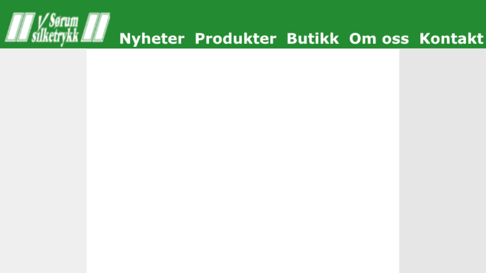
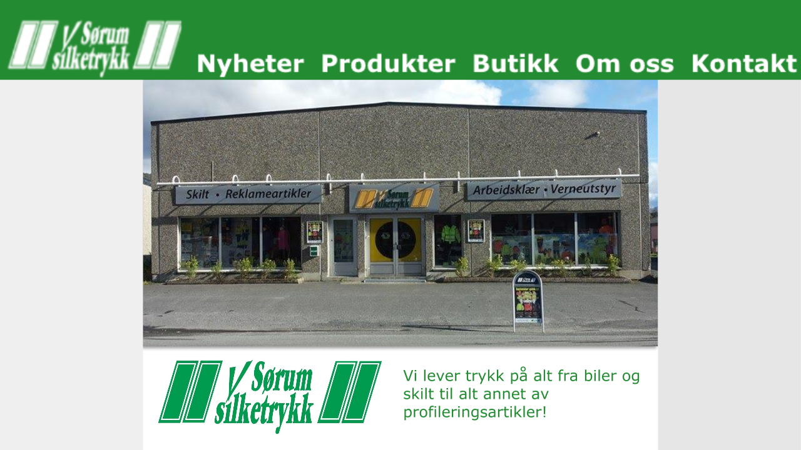
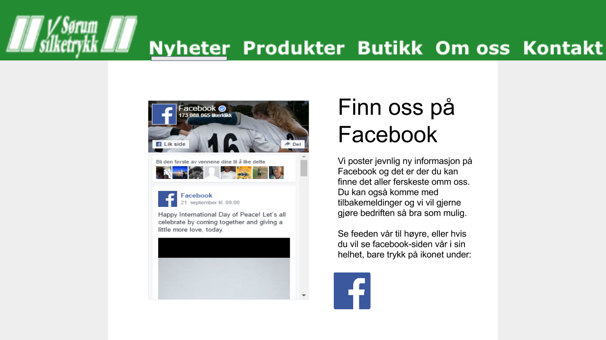
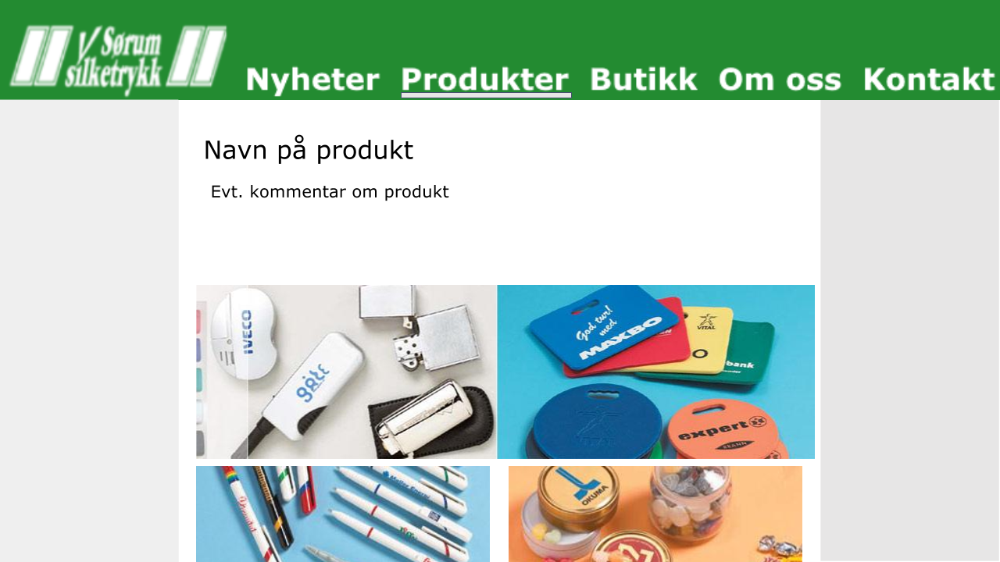
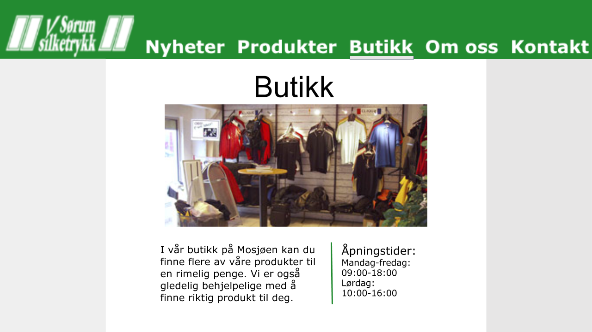
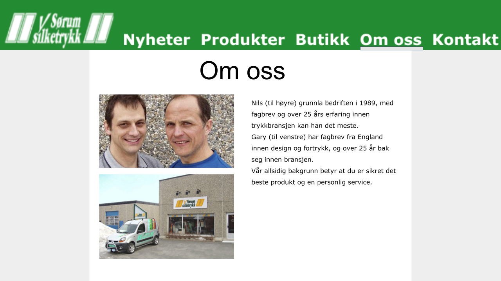
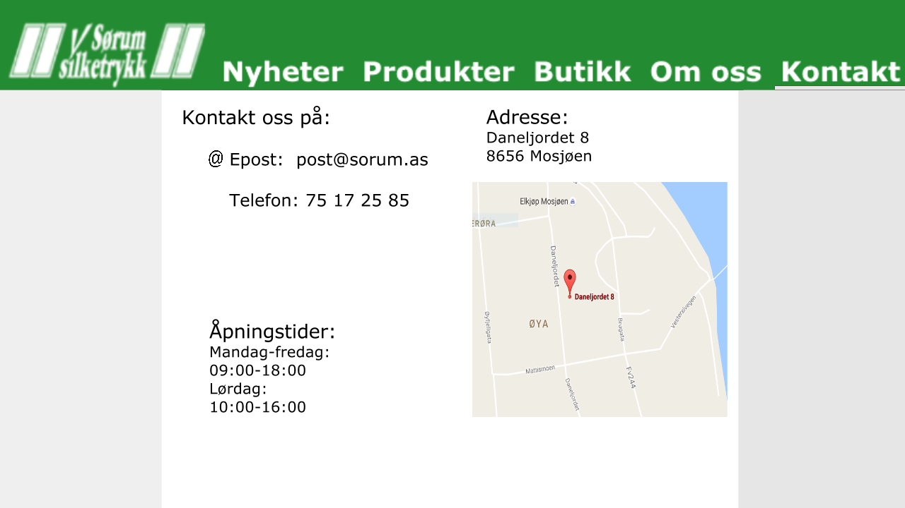

Date: 08.10.16
The purpose of the site is to provide information about the business Sørum Silketrykk. The majority of the content of the site will be images showcasing the different products offered by Sørum Silketrykk. The goal of the website is ultimately to increase sales for the business. The primary customers of Sørum Silketrykk are other businesses. Sørum also sells to individuals either custom designs for personal use or construction apparel in their store.
We’ll have a navbar present at the top of the web pages (and it will follow down when you scroll down). The user will be easily able switch to another page without having to scroll up or type anything into the url-bar. It will contain a link to every page on the website. The different products will be accessible from a dropdown menu under the category "Produkter". Since the navbar is universal, every page will be reachable from everywhere.
The website will have a white background color and sidebars of 10% width on each side that have a grey color (#F0F0F0). The navigation bar will be green (#238B31) with white (#FFFFFF) text color for the links. Its width will be 100% of of the page, and the height 20%. When you scroll down the navbar will reduce in size to 15%. We will use the font Verdana, but also have Arial and sans-serif as backups. For all paragraph text the font size will be 16 and the color will be black. The categories will be size 30 and white. Other headings will be 24, and will also be black. The grey sidebars will make the middle section of the page "pop out", and avoid making the website feel like a wall of text by giving some empty space. The black text on the white background will be easily readable, making the website easy to get information from. Sørum Silketrykk has a green logo, and making the navbar green as well will give the website a uniform look. When hovering over the categories on top, we will have a line appearing under the text to make it easy for the user to understand that it’s a link that leads to another page. This will be the same for the subpages under “produkter”.
This site is the front page of the site. The goal of it is to give the user a clear image of what the site is about and briefly tease what services Sørum provides to encourage further exploration of the website. It will also contain a big image of the store to make the page more visually appealing. It can get boring and ugly with just text. The logo can also be seen to create awareness of the business. This means that even if users quit right away when they see the frontpage, they still would have seen the logo, which means that the business now be more familiar to them.
The news page will provide users with a feed of content pulled from Sørum Silketrykks facebook page. This page is regularly updated with pictures and news about products. Including it on the web page keeps the content there fresh without the need to update the website. Not needing to update the website is ideal for our clients considering that their current website hasn’t been updated in almost a decade. The feed will be added using the developer.facebook.com plugin page to get the html and javascript code.
These pages will mostly contain a short text that describes the products, and then several images for the users to see examples of what they can provide. These sites will show that Sørum provides a wide variety of products. The text will be shown on top, the first thing you’ll see is information about the products on the page you’re on. The picture will be placed below so you can see some of the products they already have provided. The pictures will not be that big, but if you click on it, it will expand in size and be shown on the middle of the page "on top" of everything else. The reason for this is that some viewers might want to get a closer look at what Sørum Silketrykk has done earlier, to make sure they provide a quality service.
This will contain info about the about the store. A brief summary of what you can buy there, accompanied by opening hours and picture(s) of the store. The purpose is to show that they also have a retail store where you can buy some products without the need to make an order. The emphasis will be on the picture(s) rather than text since this will better show what the store is like. Therefore the picture(s) are given more space on the site.
This page contains information about the business and the owners. It will also show a picture of the owners. This is to make the business more personal. If you show the faces of the owners, there is a much smaller chance that it will seem like “just another greedy corporation”. The pictures will be on one side and the text on the other to make it look structured.
Here you will find contact information, opening hours and a map of where the business if located. We want the page to be well arranged so finding the information is easy. We will embed google maps into this page, so the user can easily find where the store is located.
Åsmund will create a dropdown bar from “Produkter”, so that the user can select which product group he/she wants to look at. This is to make it easier to find the products and maybe the user gets to see that Sørum has more products than he/she initially thought.
Reidar will create a slideshow of relevant imagery on the front page. This is to add some movement on the page, so that will be even more visual appealing! And it will also lead to that you can see a variety of images from the business, so you’ll early get an idea of what the site is about.
On the product pages Matias R will make a function that makes the images bigger on click. This is so the user can get a more detailed view of the products.
Matias H will will make it so that when you scroll down, the navbar will shrink by a small amount, so the page will be a bit more focused on the content of the page.
| Filename | Description | In charge | Deadline |
| index.html | Homepage (needs to be named index.html for folk.ntnu.no\aasmusta to open it as homepage). | Reidar | 23.10.2016 |
| news.html | News feed pulled from their facebook page | Mathias H | 23.10.2016 |
| shop.html | Information and pictures from their store | Åsmund | 23.10.2016 |
| about.html | Information about the owners. | Matias R | 23.10.2016 |
| contact.html | How to contact, where the store is and opening hours. | Maria | 23.10.2016 |
| products.html x7 | Seven really similar sites about the different products. Will contain text and images. | Maria | 23.10.2016 |
| main.css | The main stylesheet | Matias H | 30.10.2016 |
| dropdown.js | When hovering “Produkter” a menu will appear where you can select which products you want to see more information about. | Åsmund | 06.11.2016 |
| slideshow.js | Automized picture slideshow in shop.html and index.html | Reidar | 06.11.2016 |
| image_enlarge.js | When clicking an image in the "products" page it should enlarge said image | Matias R | 06.11.2016 |
| resize_navbar_when_scrolling.js | When scrolling downwards, the navbar will decrease in height | Matias H | 06.11.2016 |